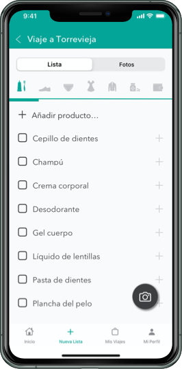
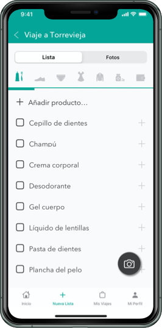

Siente Bienestar
El exceso de trabajo, estrés, las preocupaciones agreden nuestro cuerpo de forma indirecta
causando problemas musculares.
Esta App ayuda a los usuarios a encontrar centros de masaje u otros tratamientos según
sus preferencias e intereses.
En todos los centros especializados deberían de hacer entrega de un formulario de salud previo
al servicio pero no siempre es así por diversos factores.
Con Siente Bienestar todo es más sencillo. Aportamos un formulario de salud dónde mediante una
serie de preguntas específicas se crea un codigo QR y PDF.
Este código se podrá mostrar en todos los centros a los que acudas y los profesionales podrán
ver enfermedades/problemas relevantes que ellos deban saber.
Además podrás realizar la reserva online, olvidando tener que llamar por teléfono o presentarte
en el mismo establecimiento.


 
